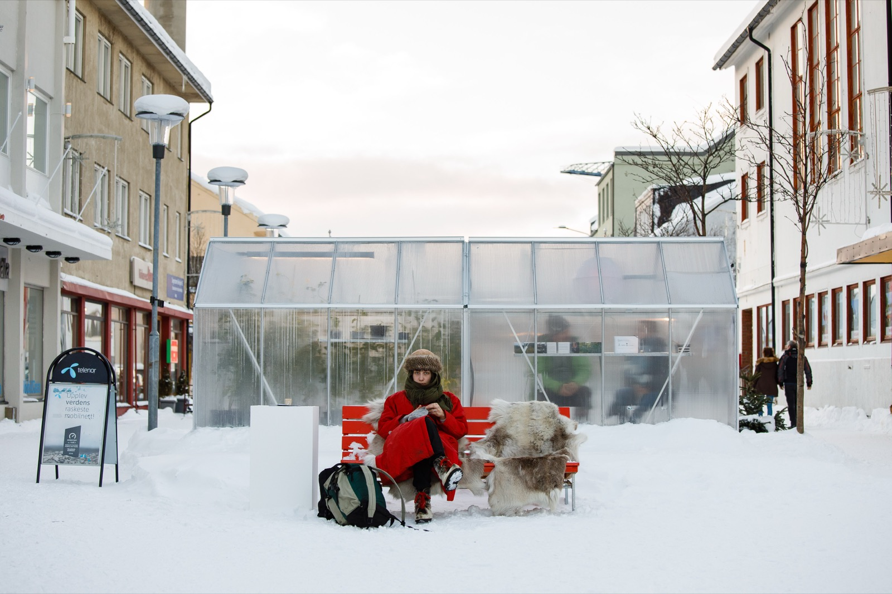

PHENOM · February 2019
We went to the coldest festival in the world
Five days in Kirkenes, fifteen kilometres from the Russian border, the year the festival's question was China in the Arctic. Seaweed wine in the old fire station, a closing party in the municipal pool, minus twenty outside.